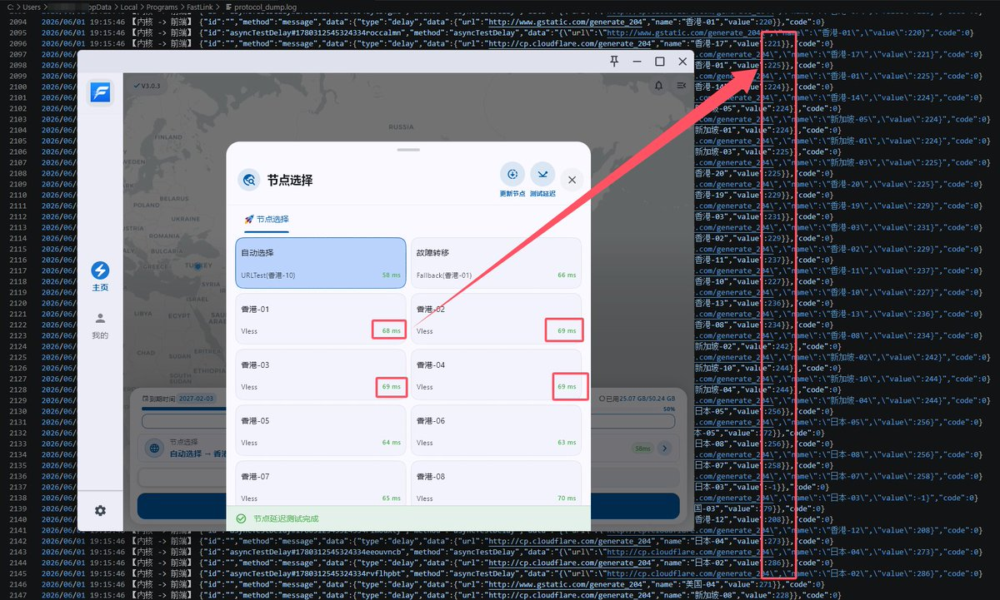

たたねこ🐱
@tatanakots
@wisecatio @__Crazy_Kid__ 专用客户端可以延迟造假，让有些用户觉得自己家的节点很快

たたねこ🐱
@tatanakots
截取内核和前端的传输数据后，我发现了机场专用客户端延迟比偷配置出来放通用客户端里面要低很多的秘密
其实延迟根本没有降低，是前端在显示延迟的时候减去了一个随机值！
我去！自欺欺人的来了！本来以为它们通过某种方式协商了一个境内中转，没想到是自欺欺人前端直接减掉延迟数据！！！ https://t.co/zOgOUU3fFy
賢猫🍵📖🧚♀️
@wisecatio
@__Crazy_Kid__ 而且搞了专属客户端还是挨打 也不知道这专属客户端的意义是什么